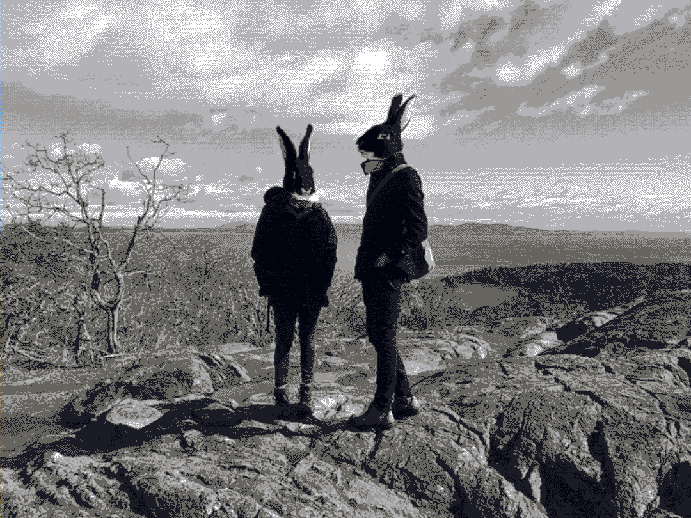

about us
rabbits
Rek is a writer and illustrator, Devine is a programmer and musician, together we operate the Hundred Rabbits research lab, aboard pino, where we do experiments on resilience and self-reliance through low-tech solutions.
Our focus is on exploring and documenting alternative ways to store power and minimum viable solutions for technological tooling. Read more about our philosophy and mission, or visit the other version of our website using the Gemini protocol.
See our floating studio's press appearances, and have a look at our onboard library. For monthly updates on our projects, see log.
- Subscribe to our blog RSS Feed here.
- Follow us on Mastodon: Rek & Neauoire
- Visit our websites Kokorobot & XXIIVV.
- Email us at hundredrabbits at gmail dot com.
why

From 2012 to 2014, we lived in Japan. Rekka was working in an animation studio, and Devine, in a software company. On weekends and evenings, we worked on our first two games: hiversaires & oquonie. Originally from Québec, we were traveling back and forth between Canada and Japan often. We wanted to exit the wasteful loop of aquiring the necessities of life each time our lives were uprooted.
We had heard of people living on sailboats but neither of us had even stepped foot on one, nevertheless, we soon found ourselves watching the videos of David Wellsford, Teresa Carey and Nike Steiger, and became obssessed with the idea. Lack of experience aside, we thought that traveling was a good catalyst for learning new languages, for developing an interest in foreign cultures and ultimately for building empathy, curiosity, and creativity.
In January 2016, we left the cold of Montréal and moved west to british columbia, where we purchased pino. Our curiosity soon led us to make our first trip out to sea, which escalated into a circumnagivation of the Pacific Ocean.
Our life at sea changed how we work, and how we think. The information we share on this website and in our videos is a living document covering of the things we learned, and is subject to change. We neither know nor think that we know.
A boat, for all its complexity, is in fact a version of simplicity, but of a satisfyingly complex kind. - Adam Nicolson
where
Since 2016, we have sailed from Canada, the us west coast, down to mexico, over to french polynesia, cook islands, niue, tonga, new zealand, fiji, The marshall islands, all the way to japan and then back again to british columbia.
View full-size version of map.
website
This wiki is statically generated from a small C89 program, the sources are available here, if you find a typo, a broken link or have a code specific question, feel free to open an issue.
setup
Rek's workstation is running the Elementary distribution of GNU/Linux, Devine's RaspberryPi workstation is running Plan 9, a compact, fully-featured OS. The videos are shot with a Sony a6000, we do our video editing with Blender, the credit illustrations with Krita, the music with the Polivoks synthesizer, and we record the voice & ambient tracks with the Sony PCM-A10.
license
The license applies to all the documented projects, the projects themselves and their assets. The source code of this website and our apps are under the MIT License, but the assets and text content of this website and of our apps are under the BY-NC-SA4.0 License. We are happy to pass knowledge, and that others can learn from our projects, improve on them, or make them into something else that is useful, but please, do not try to sell our projects as is under a different name. Doing so is very lazy, and disrespectful to us.
DO NOT resell or mint our work.
You can find our more recent projects on Sourcehut.
contribute
You can find the source files to all of our projects over on our SourceHut page.